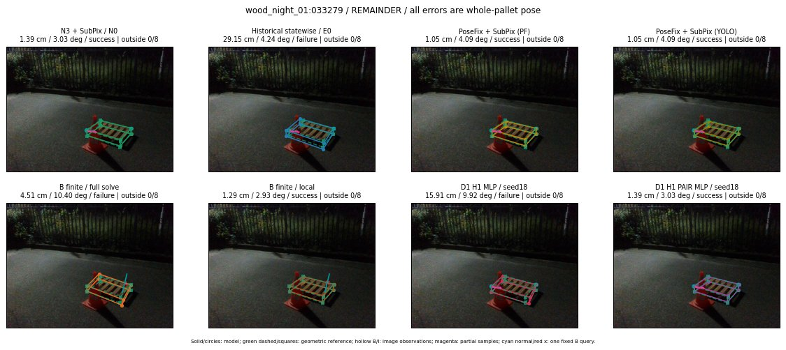

Whole-pallet pose errors; reference is a fixed geometric annotation, not certified physical GT.

Scores are uncalibrated logits. N0 retention is a numerical pose alias; it differs from H0 none or B fallback. B/I and profiles in baseline/B panels are original observations; L panels use new D1 observations. Only one deterministic supported B query is shown in a thumbnail; full support counts are below. Grey privacy rectangles edit the display copy only and are unrelated to O states; all observations were measured on original pixels. Thumbnails use JPEG quality85; detailed scientific panels are PNG.
| Method | Whole pose / cm, deg | Actual source | Selected ID | Score | Archived candidates | Eligible | N0 retained | H0 none | Fallback | Finite profiles |
|---|---|---|---|---|---|---|---|---|---|---|
| Raw YOLO + F | 9.17 cm / 0.50 deg / failure | OTHER | None | N/A | N/A | N/A | False | N/A | None | N/A |
| N3 + SubPix / N0 | 1.39 cm / 3.03 deg / success | N0 | None | N/A | N/A | N/A | True | N/A | None | N/A |
| Historical statewise / E0 | 29.15 cm / 4.24 deg / failure | E0_REGENERATED | None | N/A | N/A | N/A | False | N/A | False | N/A |
| PoseFix raw | 4.14 cm / 2.27 deg / success | OTHER | None | N/A | N/A | N/A | False | N/A | None | N/A |
| PoseFix + SubPix (PF) | 1.05 cm / 4.09 deg / success | OTHER | None | N/A | N/A | N/A | False | N/A | False | historical support records 9; finite audit N/A |
| PoseFix + SubPix (YOLO) | 1.05 cm / 4.09 deg / success | OTHER | None | N/A | N/A | N/A | False | N/A | False | historical support records 9; finite audit N/A |
| Historical L, seed18 | 1.39 cm / 3.03 deg / success | N0 | N0 | N/A | 117 | 117 | True | True | True | N/A |
| Historical B fixed bank | 15.91 cm / 9.92 deg / failure | OTHER | G10/ORIGINAL_WD/sample/6 | N/A | N/A | N/A | False | N/A | False | N/A |
| Historical B full | 1.72 cm / 9.79 deg / failure | OTHER | NEW/B/ORIGINAL_WD/h0/LOGGED/G13/ORIGINAL_WD/outline_consider/129/PROPOSED_NATIVE_YAW_0 | N/A | N/A | N/A | False | N/A | False | N/A |
| Historical edge full | 10.07 cm / 16.03 deg / failure | OTHER | NEW/edge/ORIGINAL_WD/h1/G10/SWAPPED_WD/sample/5/PROPOSED_NATIVE_YAW_1 | N/A | N/A | N/A | False | N/A | False | N/A |
| Historical AB full | 1.72 cm / 9.79 deg / failure | OTHER | NEW/AB/ORIGINAL_WD/h0/LOGGED/G13/ORIGINAL_WD/outline_consider/129/PROPOSED_NATIVE_YAW_0 | N/A | N/A | N/A | False | N/A | False | N/A |
| B finite / fixed bank | 15.91 cm / 9.92 deg / failure | OTHER | G10/ORIGINAL_WD/sample/6 | N/A | N/A | N/A | False | N/A | False | 10/10 |
| B finite / full solve | 4.51 cm / 10.40 deg / failure | OTHER | NEW_FINITE/B/ORIGINAL_WD/h0/LOGGED/G13/ORIGINAL_WD/outline_consider/129/PROPOSED_NATIVE_YAW_0 | N/A | N/A | N/A | False | N/A | False | 10/10 |
| B finite / local | 1.29 cm / 2.93 deg / success | OTHER | NEW_FINITE/B/ORIGINAL_WD/h0/N0_LOCAL_SAME_PHYSICAL_POSE/ORIGINAL_WD | N/A | N/A | N/A | False | N/A | False | 10/10 |
| Edge finite / full solve | 56.29 cm / 85.87 deg / failure | OTHER | G10/SWAPPED_WD/sample/30 | N/A | N/A | N/A | False | N/A | False | 10/10 |
| D0 H0 MLP / seed18 | 1.39 cm / 3.03 deg / success | N0 | N0 | -0.6855312585830688 | 96 | 96 | True | True | True | N/A |
| D0 H0 MLP / seed19 | 1.39 cm / 3.03 deg / success | N0 | N0 | -0.1741626262664795 | 96 | 96 | True | True | True | N/A |
| D0 H0 MLP / seed20 | 1.39 cm / 3.03 deg / success | N0 | N0 | -2.496433734893799 | 96 | 96 | True | True | True | N/A |
| D0 H1 MLP / seed18 | 15.91 cm / 9.92 deg / failure | OTHER | WD0/ORIGINAL_WD/sample/25 | -5.668376445770264 | 96 | 96 | False | False | False | N/A |
| D0 H1 MLP / seed19 | 15.91 cm / 9.92 deg / failure | OTHER | WD0/ORIGINAL_WD/sample/25 | -4.634207725524902 | 96 | 96 | False | False | False | N/A |
| D0 H1 MLP / seed20 | 15.91 cm / 9.92 deg / failure | OTHER | WD0/ORIGINAL_WD/sample/25 | -5.648835182189941 | 96 | 96 | False | False | False | N/A |
| D1 H0 MLP / seed18 | 1.39 cm / 3.03 deg / success | N0 | N0 | 4.5229997634887695 | 96 | 96 | True | True | True | N/A |
| D1 H0 MLP / seed19 | 1.39 cm / 3.03 deg / success | N0 | N0 | 4.43561315536499 | 96 | 96 | True | True | True | N/A |
| D1 H0 MLP / seed20 | 1.39 cm / 3.03 deg / success | N0 | N0 | 3.855219602584839 | 96 | 96 | True | True | True | N/A |
| D1 H1 MLP / seed18 | 15.91 cm / 9.92 deg / failure | OTHER | WD0/ORIGINAL_WD/sample/25 | -4.14471435546875 | 96 | 96 | False | False | False | N/A |
| D1 H1 MLP / seed19 | 15.91 cm / 9.92 deg / failure | OTHER | WD0/ORIGINAL_WD/sample/25 | -3.9563851356506348 | 96 | 96 | False | False | False | N/A |
| D1 H1 MLP / seed20 | 15.91 cm / 9.92 deg / failure | OTHER | WD0/ORIGINAL_WD/sample/25 | -4.315657138824463 | 96 | 96 | False | False | False | N/A |
| D1 H1 ROLE AFFINE / seed18 | 1.39 cm / 3.03 deg / success | N0 | N0 | -1.0210812091827393 | 96 | 96 | True | False | False | N/A |
| D1 H1 ROLE AFFINE / seed19 | 1.39 cm / 3.03 deg / success | N0 | N0 | -0.3892400860786438 | 96 | 96 | True | False | False | N/A |
| D1 H1 ROLE AFFINE / seed20 | 1.39 cm / 3.03 deg / success | N0 | N0 | -0.7813549637794495 | 96 | 96 | True | False | False | N/A |
| D1 H1 PAIR MLP / seed18 | 1.39 cm / 3.03 deg / success | N0 | N0 | -2.2326056957244873 | 96 | 2 | True | False | False | N/A |
| D1 H1 PAIR MLP / seed19 | 1.39 cm / 3.03 deg / success | N0 | N0 | -2.232203960418701 | 96 | 2 | True | False | False | N/A |
| D1 H1 PAIR MLP / seed20 | 1.39 cm / 3.03 deg / success | N0 | N0 | -2.886080503463745 | 96 | 2 | True | False | False | N/A |
| D1 H1 PAIR ROLE AFFINE / seed18 | 1.39 cm / 3.03 deg / success | N0 | N0 | -1.093083381652832 | 96 | 2 | True | False | False | N/A |
| D1 H1 PAIR ROLE AFFINE / seed19 | 1.39 cm / 3.03 deg / success | N0 | N0 | -1.102118730545044 | 96 | 2 | True | False | False | N/A |
| D1 H1 PAIR ROLE AFFINE / seed20 | 1.39 cm / 3.03 deg / success | N0 | N0 | -1.0515345335006714 | 96 | 2 | True | False | False | N/A |
| Regenerated common E0 | 29.15 cm / 4.24 deg / failure | E0_REGENERATED | E0_REGENERATED | N/A | N/A | N/A | False | N/A | False | N/A |